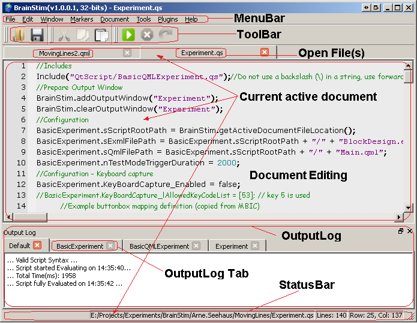

Document version: 1.0
Author(s): Sven Gijsen
Date: July 2015
The purpose of this document is to show you the basic features of BrainStim in a tutorial way. The best way working through this document is starting from the beginning and follow all tutorials till the end of the document, you could also only follow a single specific tutorial of your interest but then please bear in mind that some tutorials expect you to already gained some knowledge of previous tutorials. This Getting started guide is not perfect and continuously under construction, so we would be happy to receive feedback about bugs, typos, comments, new ideas.
Installing BrainStim on your computer is easy, you can download the latest release from the GitHub project site. The public BrainStim source code repository is also hosted here. You can choose between a 32 and 64-bit version of BrainStim depending on the Windows operating system type you're using. You can use the previous link as a guidance for checking this configuration or alternatively you can execute the following Command Prompt command (a Command prompt can be opened using the: Windows start button --> Run... --> enter the text cmd --> hit the enter key):
|
If it echoes with x86 then you're working on a 32-bit architecture, if not then it's an 64-bit architecture.
BrainStim strongly depends on the OpenGL 2.0 (or higher) graphics library, so for an optimal usage please make sure that your graphics card supports OpenGL 2.0 (or higher) and that the drivers for this graphics card are up to date. When installing BrainStim you should try to do this using administrator privileges. There are also some virus scanners which trigger a false virus detection due to the automatic installation of various (network) libraries. If you should receive a detection message like this, you could consider deactivating the real-time virus detection while installing BrainStim.
The BrainStim release download is compressed inside a zip file and should first be extracted, after that you can execute the BrainStim installer (preferable using administrative privileges).
The BrainStim installer copies the program files to the default Main Program directory (default: C:\Program Files (x86)\BrainStim), during installation the location for this directory can be customized. Inside this directory you can find the BrainStim.exe executable file that you can use to execute the BrainStim program. Some sub-directories found in this directory are:
| Directory | Description |
|---|---|
| Apis | The files inside this directory are used for supporting the BrainStim document editing, like call tips and auto completion. Each API (Application Program Interface) defines the way to handle a specific programming language. |
| Documents | This directory contains all the necessary files for the BrainStim Help. |
| Include | The default include directory used for script files when using the "Include()" script function. |
| Plugins | This is the root directory in which BrainStim searches for default plug-ins to load during startup, if compatible then they are automatically embedded in BrainStim and are then ready for usage. |
| Qml/plugins/[architecture] | This is the root directory in which BrainStim searches for QML plug-ins to include during the startup of the QML viewer. |
| Xsd | This directory contains XML Schema (*.xsd) files, which let BrainStim validate experiment (*.exml) files. It is used to express a set of rules to which an experiment must conform in order to be considered 'valid' according to that schema. |
BrainStim makes use of two additional directories, these directories are created and used after the first start of BrainStim, these are:
Depending on the windows login username and BrainStim version the path is:
C:\Users\<login username>\BrainStim(vx.x.x.x, xx-bits)
This directory is mainly used for user specific dynamic data access(read/write) and is empty (or perhaps not present) before the first start of BrainStim. Inside this directory you can find the following sub-directories/files:
| File/Directory | Description |
|---|---|
| Examples | This directory contains various example and tutorial files, some of them are also referred to by this document (see the sub-directory BrainStim\examples\GettingStartedGuide\). These files can be viewed/executed by a user and provide information about a certain topic of a feature or functionality. |
| Examples\Plugins | This directory contains the example and tutorial files for installed custom plugins. |
| Outputs | This directory is used when needed by BrainStim for saving logfiles that are generated during the execution of an experiment. |
| logfile.txt | This logfile is used by BrainStim for logging all main program execution information, warnings and errors. |
| BrainStim.ini | This file is used by BrainStim for storing and retrieving all internal settings/configurations. |
You can change this directory using the BrainStim Settings Dialog. Important! Although the BrainStim Settings File (BrainStim.ini) is located inside this directory by default the location of this file doesn't change by changing this setting, for all the remaining directories and files it does.
Depending on the windows login username and BrainStim version it's located at:
C:\Users\<login username>\AppData\Local\MBIC\BrainStim\BrainStim(vx.x.x.x, xx-bits)\Plugins\<architecture>\
This directory is used for the installation of user specific custom Plugin and additional files that are needed for this plugin.
You can change this directory using the BrainStim Settings Dialog. Important! After changing this setting you should copy all needed Plugin files from the "old" directory setting to this "new" directory setting for the plugin(s) that you still want to make use of in BrainStim.

The default BrainStim User interface contains a MenuBar, ToolBar, Document Editing, OutputLog and StatusBar area. These area's can be resized and moved around by a user and these customization are then automatically saved by file type extension of the current active document. Furthermore (custom) plugins may also define custom editing area's for different file type editing purposes. Later we'll see how the ExperimentManager's plugin implements a custom UserInterface by creating new areas for editing experiment files(*.exml).
The menu bar includes the following menu's:
| File/Directory | Description |
|---|---|
| File | contains commands for various file operations like opening, saving and printing files. |
| Edit | contains commands for the editing of files and search/replace features. Furthermore there are some additional commands for controlling the Output Log tab(s). |
| Window | contains commands for organizing, selecting and viewing one or more document(s). |
| Markers | contains commands for the management of markers that can be used to mark or quickly jump to one or more specific position(s) in a loaded document. |
| Document | contains commands for controlling the execution of various documents like script (*.qs) files. |
| Tools | contains an option command that lets you configure the BrainStim settings. |
| Plugins | contains commands for the loaded/embedded plug-ins in BrainStim. With these commands you can open the plug-in's User Interface. Plug-ins are automatic divided in Extension and Device plug-ins. You can also open the Plugin Managers dialog from this menu. |
| Help | contains commands for opening the BrainStim help and viewing release information about BrainStim. |
BrainStim makes use of a configuration file to store all settings/configurations. This configuration file, named BrainStim.ini is located in the Main Program Directory, because this directory is different per Windows login user the settings are stored separately. The settings file is also used by BrainStim for storing custom layout settings of the different UI areas.
You can open the settings dialog from BrainStim by selecting the menu commands: Tools --> Options. Read more about this topic in this document.
BrainStim can be started from the command prompt with special defined switches accompanied with one or more parameter(s). Read more about this topic in this document.
At first glance BrainStim features various text editing
tools that are found in standard text editing applications,
like for example notepad. BrainStim allows to open and edit
multiple documents simultaneously, the look and feel for
these opened document(s) depends on the document type (that
is linked to
the document extension). BrainStim automatically detects
certain (pre-registered) document types (by extension). When such a specific document type is detected and opened by BrainStim then the internal document editor is automatically configured for this document type. This internal document editor configuration contains features like styling choices, support for syntax styling, code completion and call tips that can support the editing and thus makes it more more user-friendly.
A important file type for BrainStim is that of a script (*.qs) file. This file may contain QtScript
code and can be executed by the BrainStim internal Script Engine. This makes BrainStim be more that just a rich multiple document editor,
because it's also a script interpreter. This is handled by the internal script engine that can execute script code. The supported QtScript scripting language is based on the ECMAScript standard with a few extensions, such as QObject-style signal and slot
connections (explained later in this guide).
Although the below scripting exercises a pretty easy to understand for a general programmer, they do expect you to have already gained some knowledge about scripting and basic programming.
Let's first try to open/view and execute a very basic script with BrainStim
You can see again that the plain text is automatically highlighted/styled according to the syntax it contains. Text/code can be commented using the single line comment ?//? or the multi-line ?/*? and ?*/? combination, commented text is not executed by the internal script engine but can be used for the documentation of script code for a better understanding. In the script three variables are declared (using the var�statement) and a value is assigned to them, the third variable is assigned to the calculated sum of the first two variables. The value of this third variable is then used in a special function called Log() that appends the provided string parameter to the BrainStim Output Log pane. To clear the Output Log pane right-click on it and select Clear All Output Item(s). Some times you might want to copy some text from the output log pane, you can do this by selecting the text to copy to the clipboard and then right-click on it and select Copy Selected Text. Alternatively you can also use the default operating systems Copy/Paste commands.
The QtScript code of the current active document is then evaluated and executed. You can see in the Output Log pane when the script started/stopped evaluation and how many time it took to evaluate. We can also see that for each Log() function call there?s one additional line appended to the Log Output pane.
Within the BrainStim script (QtScript) you can define functions and includes that allow you to structure this script in a more modular way read more about this topic in this document.
In a previous exercise we already made use of the additional Log() function to write text to the log output pane which can be very useful for debugging purpose. This Log() function is made available in the script environment by the BrainStim application to provide a convenient way for the user to easily output information from the running script to the main BrainStim User Interface. There are more additional convenient functions made available to the script environment by the BrainStim application, as you can see in the following example.
When we look at the script code we see that it uses some additional functions prepended with the ?BrainStim? namespace (followed/separated by a dot) because these used functions belong to the BrainStim main program. We see some functions that can retrieve absolute directory paths, environment information etc, but also some functions that perform BrainStim UI functionality like find() and closeSelectedScriptFile(). All available additional BrainStim script functions are described in the BrainStim Main Application Scripting Reference.
The Log() function is actually the same as the BrainStim.write2OutputWindow() function (internally it does exactly the same) but because this functionality it's so commonly used and the BrainStim.write2OutputWindow() function takes a lot of characters(key presses)and time to code that it has been made available to the script engine under the short Log() function signature.
The internal BrainStim script engine uses a garbage collection method to reclaim memory used by the script objects when they are no longer needed. Because this is important it's a good programming pratice to follow some guidelines to make sure this can happen, read this document for more information about this topic.
To further extend the script engine functionality BrainStim has a feature that automatically detects and integrates (pre-generated) Qt bindings for the Qt Script environment. With these bindings you get access to substantial portions of the Qt API from within Qt Script. Read this document for more information about this topic.
The BrainStim script engine supports Qt-style signal and slot connections, that can make the script very powerfull, see this document for more information regarding this topic.
BrainStim has the ability to automatically integrate (load and embed) plug-ins that extend the functionality of BrainStim (see the plug-in reference for a list of available plug-ins). These plug-ins can expose their functionality to the BrainStim Script engine, allowing the user to take advantage of these plug-ins inside the script context. Usually this is done by constructing a object dynamically inside the script from the exposed plug-in script class which we can then make use of. Each plug-in has the possibility to implement its own custom User Interface that can be opened from BrainStim, normally this User Interface offers a user friendly way for accessing and testing the plug-ins functionality. For a c++ programmer it's not difficult to create a new custom BrainStim plug-in to extend the program (if you are interested in this please contact us at sven dot gijsen at maastrichtuniversity dot nl).
Important: The internal plug-in object, used by the plug-ins User Interface to show its functionality, is in no way connected to the script or any script object created from this plug-ins class! This is because that internal plug-in is only used for testing purpose and easy access it's features but not for a global configuration. Objects that are dynamically created inside the script context from the plug-ins script class are new instances and in no way connected to the plug-ins UI.
BrainStim has totally no knowledge of the internal plug-ins implementation and does not define what or how they should do things, making this plug-in framework very flexible for developers. A BrainStim installation contains some standard plug-ins that are automatically installed together with BrainStim. These can be installed as a separate plug-in file or build inside the BrainStim executable (these plug-ins are called static). Plug-ins are grouped in either Device�or Extension�plug-ins. As we already know by now a plug-in can define a custom (script) class from which we can construct new script plug-in objects. Let's first take a look at a plug-ins implemented UI and some of its features:
We can also construct a new plug-in object from this plug-ins script class, lets try this:
We saw that the key codes (a unique number for each key) of the captured key presses where logged to the Output Log Pane and after having pressed 4 times the script automatically ended. The line var KeyBoardCaptureObj = new KeyBoardCapture(); constructs a new object from the class defined by the KeyBoardCapture plug-in. This object is then used by the script. We now need to know what this plug-in object can do:
This help document is a script class reference, that shows all the available signals/slots and member function that can be used inside the script context for this plug-ins script class.
We saw that BrainStim is a rich multiple document editor with an internal script engine that can execute scripts and that it can be extended by the use of custom plug-ins. However, the main goal during development was to create a platform for editing and executing behavioural experiments for supporting cognitive research. Creating behavioural experiments can be done by using solely the BrainStim script engine but this is pretty difficult for an average user. Therefore a BrainStim plug-in called the Experiment Manager was created to support more functionality for creating and managing behavioural experiments, see the Experiment Manager documentation. In this chapter we?ll take a look at it?s features and how it can be used to create/edit and run custom experiments.
The Experiment Manager User Interface is available through the Plugins -> Extensions Plugins�menu.
We should now see a default screen that allows us to start the experiment (by pressing the ?ALT? key) or abort (by pressing the CTRL + a combination). After we have started the experiment we should see a Polar Angle Retinotopic experiment running. We can always abort an experiment by pressing the CTRL + a key combination or wait until the experiment is finished.
The experiment we just executed by the Experiment Manager is completely defined in a Experiment File (*.exml), this is explained later. For now we only need to know that we can run these experiment files from the Experiment Managers plug-ins UI.
Plug-ins like the ExperimentManager plug-in can pre-register specific file types (by extension) in BrainStim (as we mentioned in the beginning of this getting started guide). These registered file types can then be automatically forwarded to the plug-in when loaded and/or executed in BrainStim (without BrainStim interfering). This custom file handling can then be for example a custom widget that contains a rich User Interface that can edit a specific file when it is opened in BrainStim. It could also be an custom file handler that activates when a specific file type gets executed (by using the menu document-->Execute command) in BrainStim. The later custom file (*.exml) execution handler is also implemented by the Experiment Manager plug-in.
The Experiment Manager plug-in automatically registers the (*.exml) file type extension in BrainStim and implements a custom execution handler for this type of file. This execution handler is called whenever you use the menu Document-->Execute command in BrainStim. Due to this it?s possible to directly start an experiment file after opening this document with BrainStim even without using the plug-ins User Interface like we saw above. Let's try this:
We now saw that we can start the same Experiment file directly from within BrainStim by using the execution handler for this file type implemented by the Experiment Manager.
The Experiment File�(*.exml) is an sort of XML file type that describes an experiment. The Experiment file consist out of different sections that determine the behavior/configuration of the experiment, these sections are automatically processed by the Experiment Manager (a short name for the Experiment Manager used in this document is EM). The below global explanation about these sections may be difficult to understand for an average user (non-programmer), this should not be a problem for the usage, but this explanation together with further examples should make things a little bit more clear. In the future development of BrainStim the EM plug-in will be extended with a user friendly interface to edit these sections.
If we take a look at the example Experiment file we can see that after a standard header that there are different elements defined starting with a start-tag ( for example: <section>) and ending with a end-tag�(for example: </section>) or empty-element tags�(for example: <param1/>). These elements may also include other element, named child-elements. The child-elements�from the <EXML> element have a special meaning, these are:
<defines> : Within this section we define global Experiment settings.
<declarations> : This section declares objects that are automatically constructed and can then be used in the experiment. These can be standard Qt objects (available via the script bindings) or objects derived from plug-ins script classes. These objects are then automatically constructed at the initialization of a experiment (and afterwards automatically destructed). They are managed by the EM.
<connections>�: The above derived objects have no or less functionality on their own within the Experiment execution if they don't cooperate with other objects. We use this section to connect them to other declared objects using the Qt-style signal and slot�connections. We can also connect them to the EM itself. These connected objects are also automatically disconnected before the experiment has been stopped, we don't have to take care of this.
<initializations>�: Often we first need to initialize a constructed objects before we can actually use them in the running Experiment, maybe we first need to perform some configuration? This section allows us to do this.
<actions>�: This section contains the actual actions that should be performed when running the Experiment. Inside the <blocks>�child-element you can describe an sequentially Block-design experiment with pre-defined <parameters> that are used by an derived object during the execution of the experiment.
<finalizations>�: This section allows you to perform some operations before the EM finalizes the experiment.
Before the Block-design experiment actually starts the user is presented a screen where the experiment can be started or aborted as we have seen before. After the user pressed the 'TAB' key to start the experiment, the EM executes the experiment defined in the (<actions>, <blocks>) sections (or the CTRL + a key combination to abort the Experiment).
Inside the <blocks> section of the <actions> section you can find the sections that define the Experiment Structure Block(s)/Trial(s)/Internal and External Trigger(s). This Experiment Structure is used while running the Experiment to step through the different BlockTrial(s) that can be defined with parameter(s) <parameter> for the corresponding object(s) <object>. The Experiment Structure is optimized for the definition of an Block Experiment design. In a block design, two or more conditions are alternated in blocks and trials, these conditions can be defined by the different parameters for the objects. Each BlockTrial will have a duration of a certain number of i.e. fMRI scans and within each block only one condition is presented. By making the conditions differ in only the cognitive process of interest, the fMRI signal that differentiates the conditions should represent this cognitive process of interest.
We see that there are only 2 Blocks defined in the above PolarAngle.exml�Experiment file. The first Block that is executed is the one with Block number 0 (see <block_number>0</block_number>) and named Fixation_Block (see <name>Fixation_Block</name>) has an internal Block-ID of 0 (see <block ID="0">). This Block only takes 1 Trial (the number of repetitions of this Block) (see <nr_of_trials>1</nr_of_trials>) and one Trial takes 2 Internal Triggers (see <nr_of_internal_triggers>2</nr_of_internal_triggers) and one Internal Trigger takes 1 External Trigger (see <nr_of_external_triggers>1</nr_of_external_triggers). So what does this exactly mean? If the Experiment Structure is externally triggered by an signal that for example fires each time the fMRI scanner scans one volume (i.e. Tr = 2 Seconds) than the external trigger counter will increment each 2 seconds because the Experiment Manager will then automatically step through the Experiment Structure defined here. Because one Internal Trigger only takes 1 External Trigger in this Block the Internal Trigger is also incremented each 2 seconds (if nr_of_external_triggers would be set to 3 then each Internal Trigger would take 6 (=3*2 seconds in this example) seconds. After 2 Internal Triggers the Trial counter would be incremented if there were more than one Trials defined but because the is not the case it will then advance to the next Block with Block Number 1 (=0+1=1), because the Blocks are sequentially activated by their defined Block Number (starting with 0). We now know that the Block with Block Number 0 (the 'Fixation_Block') only takes in total 2 External Triggers, thus 4 Seconds in our example.
The Block with Block Number 1 would thus take (1 External Trigger * 36 Internal Triggers * 6 Trials * 2 seconds per External Trigger) 432 seconds, each Trial takes 72 seconds. We also see different Parameters defined in the Block definitions. These parameters are linked to the Object with Object ID 1 (see <object ID="1">), this is the Object with the name RetinoMap_Object_1 derived from the script class RetinotopyMapper (see the ObjectID=1 definition in the <declaration> section). The available Parameters from the RetinotopyMapper class are described in a detailed explanation here. We see that the parameters have an fixed value within each Block. Parameters that aren't defined automatically use their default value and if they are changed inside the Experiment File they hold/buffer that value until the Experiment ends. Whenever the current Experiment Structure switches to a new BlockTrial (Block or Trial) the defined parameter values are parsed and used in the experiment. By implementing a Experiment like the above we have an declarative way of defining different conditions with parameters in a block design Experiment that is defined by our Experiment Structure. The parameter values are now statically defined (they have fixed values) in the Experiment File, later on we'll see how we can dynamically change them inside our script environment. When there are no more Block to run the Experiment is automatically finalized (see the <finalizations> section) and hereafter stopped. We can also always manually abort the Experiment when its running by pressing the CTRL + a (for Abort) key combination.
Important:
Sometimes we also want to be able to increment the External Trigger (see above) manually for testing purpose, we can do this with the available key combination CTRL + t (for Trigger), for each of this key combination press the External Trigger counter increments one step.
In the above example we imagined that the Experiment would be Triggered externally by a signal that would be synchronized with a fMRI scanner Trigger. But in real this Experiment is triggered automatically by a object derived from a TriggerTimer class each 1000 milliseconds, next we'll see how this is done.
The declared objects in the <declarations> section of the Experiment file have an unique <object ID="">�tag that is used in all of the remaining sections to address to that object. In the experiment file, in the declarations section, we see that an object named Timer_Object_1, with ID number 0, is declared and derived from the TriggerTimer�script class (this class is made available by the EM). This TriggerTimer object is then used in the Experiment for the automatic triggering of the experiment by connecting its timeout() signal for triggering the experiment. We can see this in the <connections> section, the TriggerTimer timeout() signal is here connected to a incrementExternalTrigger() slot of the RetinotopyMapper�class derived object. We use this TriggerTimer�class derived object because it can perform very accurate timing and triggering (by emitting a signal) other objects.
We then also initialize (<initializations>) the TriggerTimer�object with the startTimer(1000)�function before the Experiment actually starts. This function initializes and starts the TriggerTimer object which then signals/emits the timeout()�signal each 1000 milliseconds. When the Experiment stops or has been aborted the Timer_Object_1 is stopped automatically automatically because of the slot stopTimer() is then called (see the <finalizations> section).
The above example runs an Retinotopic Polar Angle mapping experiment.
The second object it declares is named RetinoMap_Object_1, with ID number 0, this object is derived from the RetinotopyMapper script class. It?s purpose is to support the calculation and drawing (with the use of OpenGL) for various kind of Retinotopic visual stimuli like the Polar Angle. At the moment there are only 2 classes available in the Experiment Manager plug-in of which you can derive from for the presentation of stimuli, these are:
The Block-design definition inside the (<actions>, <blocks>) sections defines one or more experiment blocks (for example: <block ID="0">), each block again has an unique ID. Each block is defined by the elements:
<name>�: With this element you can define the name for the block. At the moment this parameter is not yet used by the EM.
<block_number> : This element defines the block number and thus when the block is active. All numbering inside the EM starts counting at 0. Please note that the position of the block sections and their ID do not define when the block is active.
<nr_of_trials> : This element defines the number of trials for this block. For each trial all defined block settings inside the block element are used. Each trial can be triggered by one or more other object(s) (i.e. this could be a timer like the example experiment but also a special hardware port that can emit a signal). This other object then defines how fast it triggers the EM by connecting its signal to the incrementExternalTrigger()�slot of the EM. The EM then processes these incoming triggers (signals) automatically by changing the state of the experiment structure automatically. This experiment structure is defined by the current block, trial and internal trigger number.
<nr_of_internal_triggers> : This element defines after how many internal triggers the EM should switch to the next trial for the block (or next block if there are no more trials, or end the experiment if there are no more blocks defined).
<nr_of_external_triggers> : This element defines after how many external triggers received by the EM (by invoking the slot incrementExternalTrigger()) the internal trigger counter should be incremented with one. Normally this is element is set to value ?1? making the internal and external trigger counter increment synchronously.
<object ID="<ID>">{<parameters>} : The parameters section defines all the parameter(s) for the experiment object (with Object ID=<ID>). These parameters can here be defined for each block section. These parameters are then automatically parsed and used by the experiment object in our example case by, the object with ID=1, the RetinotopyMapper�object.
We see that each parameter has an unique name and a corresponding value. In the example experiment file there?s a parameter named RetinoPattern. This parameter defines which type of Retinotopic mapping visual pattern is shown on the screen for the current block. The first block (with block_number�0) shows an fixation cross (fixation) on the screen, the second block shown a polar angle (PolarAngle) Retinotopic pattern on the screen. All parameter names are case insensitive and hold (buffer) their last set value during the whole experiment and therefore you do not need to define the values for them if they don?t change.
Another way to run Experiment files is to construct an EM in the script context and then control that EM object in the script to execute the Experiment. The EM plug-in defines a script class which we can then use to construct a new EM script object. Running experiments like this gives us much more flexibility and control over the EM object and thus the experiment. The EM script class defines several public signals and slots we can access and use inside the script context for more control and functionality:
The script first constructs a EM object ( = new ExperimentManager();) needed for running the Experiment. It then makes use of a BrainStim script function (getActiveDocumentFileLocation()) to retrieve the directory path of the script file, the variable is later used to create a directory pat to the Experiment File (*.exml) which contains the configuration of the Experiment for the EM. It then defines some local script functions that are connected to some EM signals for further integration within the script context inside the function (ConnectDisconnectScriptFunctions()).
In the end of the script we set the Experiment File directory path by using the EM Slot setExperimentFileName()�(see code at the end of the document) and then run the Experiment with runExperiment(). The CleanupScript() function is invoked when the EM signals that it has been stopped in the function ExperimentStateChanged() and this will then nicely follow the guidelines for garbage collection and exit/release the script.
The EM can pass different states after it has been constructed because it works like a sort of state machine�for running experiments. A signal named ExperimentStateHasChanged() is emitted each time after the EM state changes. You can connect this signal to a script function, as the example does. By doing this you have more control and information about the EM. The example makes use of this option to automatically call the CleanupScript()�function after the state changes to ExperimentManager_Stopped. The documentation for the different Experiment Manager states is available here.
The experiment can be stopped (or aborted) by several reasons, the user can normally abort it by pressing CTRL + a when it has been started or when something goes wrong or when the Experiment has been completely executed.
An huge advantage of using a Retinotopic mapping experiment�object is it?s visual presentation speed, accuracy and flexible parameter configurability. Aside Retinotopic experiments there?s also a need for a more rich featured experiment type that allows the presentation various content like text, movies, sounds, pictures and easy input from keyboard and mouse. For this purpose the EM also supports the usage of QML-based experiments (*.qml)�files, that contains QtQuick2 code, by implementing the QML2Viewer experiment object (instead of the RetinotopyMapper�object). In the <declarations> section of the Experiment File we can then also declare an object of this object class and use it's features in the experiment. We can use this QML2Viewer experiment object directly by executing one of it's input (*.qml) files (a QtQuick2 content file) by BrainStim or by the Experiment Managers UI, let's try this:
The EM first tried to parse the files QtQuick2 code and execute this QML-based file. As a result we saw a screen presented with a yellow background, a "Hello world" text and two filled rectangles (red and blue). Again we can also execute this file directly from within BrainStim because the EM also installed a custom execution handler for this type of file (*.qml), let's try this:
We can now see the content of the file. It?s plain text containing some declarations (the QtQuick2 code).
Qt offers an extensive Integrated Development Environment (IDE) package for designing Qt based applications; the Qt Creator IDE. This package also contains the Qt Quick designer. This is a textual and easy WYSIWYG�(What-You-See-Is-What-You-Get) visual editor for QML files with QtQuick2 content. It allows you to rapidly design and build Qt Quick (*.qml files) components from scratch. It is completely integrated into Qt Creator and works seamlessly with the QML code editor. Both modes (design and edit) can be used according to requirements. You can download the IDE here. See a YouTube movie�demonstrating some of the basic Qt Quick editing features using Qt Creator. The installation of QtCreator is pretty easy, let's try this:
We'll now see how we can use a custom BrainStim script to create automatically a QtQuick2 project file that can be loaded/edited by QtCreator. Furthermore we'll see how we then can access BrainStim from QtCreator for running the QtQuick2 content.
We can also make use of BrainStim to execute QtQuick content from within QtCreator, before we can do this we should register BrainStim in QtCreator as an external tool that can execute QtQuick2 files, let's try this:
We can also make use of the QML (QtQuick2 content) based files from within EXML based Experiment files. This collaboration creates a huge advantage because we can then combine the advantages (speed, plug-in flexibility and block designs features) from the Experiment files (*.exml files) together with the advantages (rich, fast and easy to setup content) of QtQuick2 (*.qml files) within the Experiment Manager. Let?s take a look at an example of how we can achieve this:
The above example shows how we can setup an experiment by combining the Experiment Structure with the Experiment Presentation. This works fine but we might want to improve the experiment to:
The above improvements result in a experiment that consists out of 4 files, found in the BrainStim\examples\GettingStartedGuide\ExperimentManager\QtQuick2\ directory, these are:
All four files can be executed separately directly by BrainStim, but all the important experiment control takes place in the script and that's why we should now use the script file to start and test the experiment. The script (FruitsExperiment.qs) dynamically creates a ExperimentManager object that loads and executes the Experiment file (BlockDesign2.exml) which declares a QML2Viewer object for the execution of the QML file (Fruits.qml) that embeds another QML file (ShowExperimentStructure.qml) for the presentation of the Experiment Structure. Whenever the Experiment Structure changes this is automatically signalled to the script (signal/slot connections) which is then responsible for the control over the presentation state made available by the interface described in the QML files. The choose of presentation state is selected from a pre filled and randomized Array that contains the states (Acai or Banana) for the experiment presentation. The Experiment Structure defined in the Experiment file (BlockDesign2.exml) now defines only two blocks and uses only one QML file. The first block is the fixation block and lasts for 5 external triggers (again 5 seconds for this case). The second block lasts for 10 trials of 2 external triggers, thus 10 trials of 2 seconds. Each trial of the second block is then automatically controlled by the script that uses an randomized array that defines whether the experiment should present the Acai or Banana state. The script also takes control over the visual presentation of the Experiment Structure.
Due to the huge capabilities of BrainStim this getting started guide might be difficult to fully understand immediately, this is not a problem. It's important to gain a general idea of how BrainStim works and what it's main capabilities are. If you then want to give it a try you could then start by copying a example from this getting started guide or from one of the tutorials found in the BrainStim\examples\Tutorials directory. Off course you can also always contact us at sven dot gijsen at maastrichtuniversity dot nl for feedback and questions.